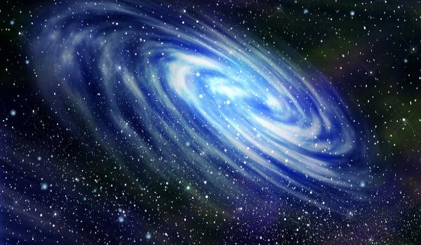
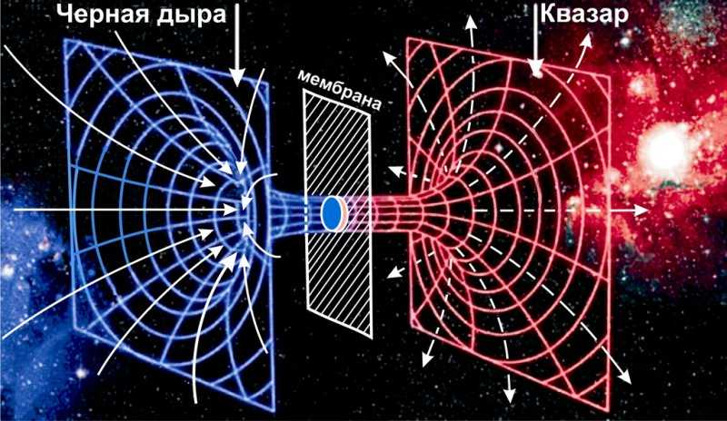

Немного о планетах

Совсем чуть чуть о галактике в галактике
Не так давно учённые обнаружили удивительную кольцевую галактику. Внутри нее находяться ещё одно кольцо более широкой галактики, а в самом центре расположилась третья. Было выдвинуто несколько предположений, как подобное чудо могло образоваться. Ни одна из гипотез не была подтверждена.
Что же такое черная и белая дыра?
Черные дыры — одни из самых загадочных объектов Вселенной. Эти необычные области считаются коллапсирующими ядрами мертвых звезд и широко известны за свою способность удерживать любую материю за счет мощнейшего гравитационного притяжения. Насколько астрономам известно на сегодняшний день, черные дыры так плотны и массивны, что ничто не может покинуть их горизонт событий. Однако они — вовсе не единственная разновидность космических «дыр».
Белая дыра или сингулярность До сих пор астрономы еще ни разу не наблюдали белую дыру. Некоторые физики считают, что в реальном мире такие объекты не могут существовать по определению, поскольку тому есть ряд причин. Первая и самая основная — механизм формирования. У нас уже есть правдоподобные модели возникновения черных дыр, пускай это и просто гипотезы. Однако для возникновения белой дыры необходима буквальная перемотка времени, а это граничит с научной фантастикой. По факту, объект должен начаться с сингулярности и двигаться в обратном направлении, пока не соберется обратно в звезду. Это потребовало бы уменьшения энтропии, что грубо нарушает второй закон термодинамики. С сингулярностью все тоже не так просто. Единственный способ установить наличие сингулярности — это определить ее физические координаты во Вселенной. Иными словами, конкретный участок космоса должен изначально сформироваться с готовым шаблоном в виде сингулярности. Астрофизик Карен Мастерс поясняет, что до сих пор у ученых не было повода считать, что подобное «шаблонное» формирование Вселенной вообще имело место быть.